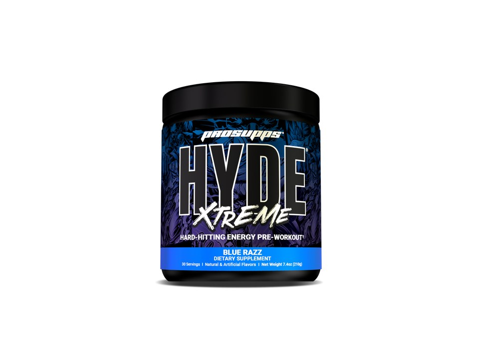

Product imagery supplied by the retailer. Packaging may vary — verify the Supplement Facts panel on the container you receive.
ProSupps
Mr. HYDE Xtreme
High stimulant content · Read safety guidance
Our analysis — editorial take, not from the label
A single-column, single-scoop label built almost entirely around stimulants: 378 mg of stated caffeine plus 3 mg of 8% yohimbe in 7.4 g of powder. The performance side is a 4.5 g Strength Matrix whose parts — 2.5 g beta-alanine, 1 g creatine HCl, 500 mg Nitrosigine, 500 mg citrulline aspartate — each sit under their studied amounts, which is the mirror image of the Mr. HYDE Signature V2 label and its 200 mg caffeine and 2.5 g creatine monohydrate.
- Caffeine
- 378 mg
- Citrulline
- —
- Beta-alanine
- 2.5 g
- Servings
- 30
Price tier: Budget · relative cost per full serving across this database
We don't list dollar prices — they change daily and go stale. Check the live price instead:
View current price at Amazon Compare all 51 pre-workoutsScoop Sense doesn't collect user reviews and won't invent them. Read customer reviews on Amazon
Affiliate links — Scoop Sense may earn a commission at no additional cost to you.
Five flavors (Blue Razz, Fruit Punch, Watermelon, Pixie Dust, Green Apple) sweetened with sucralose and acesulfame potassium; color comes from blue or green spirulina or fruit and vegetable juice depending on flavor, not FD&C dyes.
Label verified: September 2026 · View supplement facts image
Label data
Per full serving · 30 servings per container · from the manufacturer's panel
| Caffeine | 378 mg |
|---|---|
| Beta Alanine | 2.5 g |
| Arginine Silicate Inositol (Nitrosigine) | 500 mg |
| Creatine HCl | 1 g |
| Proprietary blend | No |
Primary label source: ProSupps — official Mr. HYDE Xtreme product page · verified September 2026
Cautions
- 378 mg is the label's own stated caffeine figure and it all sits in a single 7.4 g scoop — the directions say one scoop only, and to start with half a scoop
- The panel also lists 3 mg of yohimbe bark extract standardized to 8% yohimbine alongside the caffeine
- Every line carries a dose except a 50 mg 'Caffeine Citric Acid Blend'; 2.5 g beta-alanine may cause harmless tingling (paresthesia)
Formulated for healthy adults — not intended for anyone under 18. Performance studies use roughly 3–6 mg of caffeine per kg of body weight, which puts 378 mg at the studied amount for a 63–126 kg adult. Full health & safety notes
Product details
Where this label sits
ProSupps Mr. HYDE Xtreme sits in the high stim tier of the Scoop Sense pre-workout database, which spans 0–400 mg of caffeine per serving. Every active ingredient on the panel is listed with its own dose — nothing is hidden inside a blend total. It runs 30 servings per container at the full labeled serving. Everything on this page comes from the manufacturer's supplement facts panel as of September 2026 — never from the marketing page.
Key ingredients & studied doses
- Caffeine (420 mg Caffeine Matrix) · 378 mg. The label's own stated actual caffeine content, split across caffeine anhydrous, di-caffeine malate and a caffeine citric acid blend; well above the 3-6 mg/kg used in most performance research for a typical adult, and paired with only 50 mg of L-theanine.
- Beta Alanine · 2.5 g. Below the 3.2-6.4 g/day range shown to raise muscle carnosine, though still enough to cause tingling for many people.
- Arginine Silicate Inositol (Nitrosigine) · 500 mg. One third of the 1,500 mg daily amount used in most Nitrosigine blood-flow research.
- Creatine HCl · 1 g. Far under the roughly 3-5 g/day of creatine used in research; a token amount rather than a working dose.
Flavors & sweetener
Five flavors (Blue Razz, Fruit Punch, Watermelon, Pixie Dust, Green Apple) sweetened with sucralose and acesulfame potassium; color comes from blue or green spirulina or fruit and vegetable juice depending on flavor, not FD&C dyes.
Who it's best for
Experienced high-stimulant users only — not a sensible first pre-workout. Derived from the label figures above — not medical advice.
How we log this label
Every entry is built the same way: we read the current supplement facts panel, log each disclosed dose, compare it against the amounts used in published research, flag proprietary blends, and state the cautions plainly. The full methodology explains each step.
This label against the research
How we evaluate labelsEach bar shows the amount commonly used in published human research, and where this label's dose falls against it. Research amounts are context, not a recommendation — they are not doses, and nothing here is medical advice. The bars compare what the label states; we do not laboratory-test the product to confirm it.
-
Beta-alanine2.5 g
78% of the low end of the studied range0studied range 3.2 g–6.4 g7 g
Studied as a daily loading protocol of 3.2–6.4 g taken for four weeks or longer. A single serving below that range still counts toward the daily total, but one scoop is not a studied dose on its own.
Source: Rezende et al., Frontiers in Physiology 2020 — “It seems that substantial amounts of BA are required to increase MCarn, with most studies using doses of ~3.2–6.4 g·day−1, for periods ranging from 4 to 24 weeks.”
-
Nitrosigine0.5 g
33% of the low end of the studied range0studied range 1.5 g2 g
The manufacturer's own published work uses 1.5 g, and formulas that include it generally match that amount.
Source: Kalman et al., Nutrients 2016 — “The active treatment contained 1500 mg of ASI (arginine, silicon, inositol and potassium)”
-
Creatine HCl1 g
Creatine HCl has no established studied dose of its own. Brands serve it at a fraction of the monohydrate amount on a solubility argument that head-to-head research has not settled.
-
Caffeine378 mg
At or above the studied amount0studied range 200 mg–400 mg450 mg
Performance studies most often use 3–6 mg per kg of body weight, which works out to roughly 200–400 mg for most adults. The FDA cites 400 mg a day as an amount not generally associated with negative effects in healthy adults.
Source: Guest et al., Journal of the International Society of Sports Nutrition 2021 — “Caffeine has consistently been shown to improve exercise performance when consumed in doses of 3–6 mg/kg body mass.”
Common questions about ProSupps Mr. HYDE Xtreme
How much caffeine is in ProSupps Mr. HYDE Xtreme?
378 mg per full labeled serving — roughly 4 small cups of coffee. Within the Scoop Sense pre-workout database (0–400 mg per serving) that places it in the high stim tier. The FDA cites about 400 mg per day as an amount generally not associated with negative effects in healthy adults, and coffee, tea, and energy drinks count toward the same total.
Why does ProSupps Mr. HYDE Xtreme make my skin tingle?
The 2.5 g of beta-alanine. The prickling (paresthesia) in the face, neck, and hands is generally considered harmless, is dose-dependent, and fades on its own — typically within about an hour. Most beta-alanine studies use 3.2 g per day.
Does ProSupps Mr. HYDE Xtreme disclose every dose?
Yes — the label lists an individual amount for each ingredient, with no proprietary blends. That is what the "label fully disclosed" tag on Scoop Sense means, and it is what lets each dose be compared against the amounts used in published research.
Do the numbers for ProSupps Mr. HYDE Xtreme assume one scoop or two?
All figures on this page are per full labeled serving. 378 mg is the label's own stated caffeine figure and it all sits in a single 7.4 g scoop — the directions say one scoop only, and to start with half a scoop.